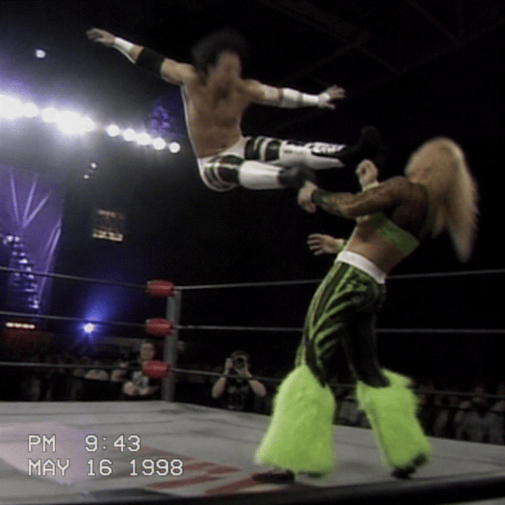

2026/10/30(金)
アベマ・試合結果速報！
○アレックス・シェリー (19分32秒 ショーン・ドロップ) キット・ウィルソン●
○小島聡 (14分25秒 中島ファンタジー) サントス・エスコバー●
○タマ・トンガ (22分11秒 ガンスタン) ドミニク・ミステリオ●
○ウルフアロン (17分45秒 シューティングスタープレス) KONOSUKE TAKESHITA●
○El Grande Americano (12分30秒 スピア) コーディ・ローデス●
○ビアンカ・ベレア (23分01秒 K.O.D.) アイビー・ナイル●
○ドリュー・マッキンタイア (18分55秒 ケルド・スクリュー) オーティス●
○KONOSUKE TAKESHITA (15分15秒 アックスボンバー) 辻陽太●
Thank you for Watching !

「アレックス・シェリー (19分32秒 ショーン・ドロップ) キット・ウィルソン●」